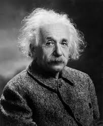

Őrültség és kreativitás
Kik vagyunk mi, hogy ítélkezzünk, hogy megítéljük, ki az aki “normális” és ki az aki nem. Nos, a felnőtté válásunk során mint megismerünk bizonyos érték rendszereket amelyek meghatározó szerepet töltenek be a saját ítélőképességünk kialakulásában. Továbbá a számunkra megszokott dolgok válnak normálissá és, ami nem megszokott, furcsa azt sokszor hajlamosak vagyunk butaságnak, őrültségnek nevezni. Így van ez az emberek esetében is, sokszor aki a mi értékrendünk szerint furcsán viselkedik őrültnek nevezzük, holott az őrültség, mint valódi személyiség hiba és a nagymértékű kreativitás ezzel együtt pedig a sikeres élet közt csak egy kicsivel több dopamintermelődés határozza meg a különbséget.
Számos kutatás célja volt a kognitív inaktivitást mutató személyek és az erősen kreatív, forradalmi ötletekkel rendelkező egyének agyában lezajló folyamatok megértése és köztük levő kapcsolat megismerése. A kutatások pedig bebizonyították, hogy a két véglet közti különbség csak egy hajszálnyi. Ezért ismerünk példákat a akár mindennapjainkból olyan esetekre, amikor valaki nagy fokú műveltséggel és általános ismeretekkel rendelkezett, óriási tudásvágya volt, ám az idők múltán mentális betegség jeleit kezdte mutatni, amelyek egyre csak erősödtek, míg komoly mentális problémákká nem fejlődtek.
A szkizofrénia egyfajta kóros mentális betegség, amely hallucinációkkal, általában auditívvel és paranoid, bizarr téveszmékkel jár. Ezek a hallucinációk az egyén viselkedését kommentálják és lehetnek bátorítóak, de erősen lehúzóak is. Egy kiváló példa ebben a tekintetben a Nóbel díjas matematikus John Nash, aki szintén szkizofréniával küzdött.
Oshin Vartanian a torontói York University kutatója, arra próbált választ keresni, hogy az agyunk mely része a legaktívabb, amikor döntéshozatal előtt állunk, egy döntést kell meghoznunk. Megfigyelte az emberi agyat, amikor ennek döntést kellett hoznia és észrevette, hogy amikor megszületik a döntés egy kreatív probléma megoldására az agy homloklebenyének jobb fele aktív. Egy második kísérletben a résztvevőknek nem kellet megoldaniuk semmit, csak arra kérte őket, hogy használják a képzeletüket, előbb a reális képeket kellett elképzelniük, mint például egy rózsát, majd olyan dolgokat, amik nem léteznek, a megfigyelés eredményeként azt figyelte meg, hogy a második esetben ugyanaz a része aktív az agynak, mint a probléma megoldásakor. De a szkizofrén egyének boncolásakor is megfigyelhető ugyanennek a régiónak a deformálódása, ami valószínüleg összeköttetésben áll azzal, hogy mikor kreatívak vagyunk kicsit olyan, mintha szkizofrének lennénk.
Ugyanez történik, mikor álmodunk is, olyankor olyan kreatív részeink dolgoznak, a tudatalattink legmélye, mint amikor a legkreatívabbak vagyunk, vagy, mintha szkizofrének lennénk. Hiszen az agyunk ilyenkor teljesen szabadjára van engedve és képes a teljesen elvont dolgokat a valósággal kombinálni, tehát az álmodás folyamata egy nagyon dopaminerg folyamat. Freud azt az agyi aktivitást, amely az álmodás közben történik elsődleges feldolgozásnak nevezte, ezért rendetlenek, logikátlanok és határnélküliek az álmaink, amelyek tartalmazzák az elsődleges vágyainkat. Ahogy Arthur Schopenhauer mondta: “Az álom egy rövid őrültség, de az őrültség egy hosszú álom”.
Az álmok melegágya megoldhatja a problémáinkat

Ha kiválasztunk egy problémát, amely nagyon fontos nekünk és szeretnénk megoldani (minél fontosabb az a probléma, az a megoldani vágyott dolog annál nagyobb az esélye, hogy az meg is jelenik az álmunkban). Ha lehetséges vizualizáljuk az a helyzetet, azt a problémát, amit meg szeretnénk oldani, például ha egy emberrel kapcsolatos a megoldandó helyet, akkor ajánlott azt az embert elképzelni, ha nincs inspirációnk, akkor egy üres papírlapot, ha pedig egy projekttel küszködünk, akkor egy tárgyat, ami azt a projektet szimbolizálja. Ha ez az utolsó gondolatunk elalvás előtt, akkor elég nagy esély van rá, hogy ezzel álmodjunk. Szintén ajánlott, hogy egy ceruza és egy papír legyen az ágyunk mellett, hogy amikor felkelünk, mig meg emlékszünk írjuk le, hogy mit álmodtunk, hiszen hamar elfelejtjük és sokszor nehezen kibogozhatóak az álmaink. Nem biztos, hogy mindig hasznos vagy racionális, amit álmodunk, de sok esetben egy új perspektívát tárhat elénk.
A tudósokat szintén erősen érdeki, a racionális dolgok és művészetek közti összefüggés, több kutatás célja is volt, hogy vizsgálják, hogy a matematikai beállítottságnak például mennyi köze van a zenéhez. A kutatások igazolták, hogy igenis sok, ugyanis mindkettő egy dopaminderg vezérlést igényel. Azonban a túlzott dopamin termelődés, ahogy már elmlítettem számos előnnyel járhat a karrier terén, de az emberi kapcsolatok terén, nem sok előny származik ebből. Hiszen empátiára van szükségünk, hogy más embereket megértsünk, ez pedig nem egy dopamin által vezérelt folyamat, hanem más hormonok segítik elő az ilyesfajta társas gondolkodást, amelyeke itt és most hormonoknak nevezünk, ilyen az oxitocin vagy a szerotonin. A dopaminerg embereknek a társas kapcsolatok unalmasak és nem nyújtanak boldogságot. Albert Einstein például azt mondta, hogy “Buzgó igazságérzetem és társadalmi felelősségvállalásom furcsa ellentétben áll azzal a ténnyel, hogy egyáltalán nincs szükségem más emberi lényekkel való közvetlen kapcsolatra”. Einstein életében látható volt ez a nehézség az emberi kapcsolatok megértésére. Sokkal inkább volt érdekelt tudományban, mint az emberi kapcsolatokban. Két évvel azelőtt, hogy elvált volna feleségétől kikezdett a feleségének az unokatestvérével és később feleségül is vette őt, majd őt is megcsalta a titkárnőjével. Szóval kimondhatjuk, hogy a dopaminerg elme egyszerre jó tulajdonság és rossz is.
A dopamin receptorok blokkolása
A szkizofrének nagy dopamin aktivitást mutatnak, ez okozza az ő elmezavarukat is. Tehát a leghatékonyabb módszer ennek a betegségnek a kezelésére, az olyan gyógyszerek, amelyek megakadályozzák a hormon bejutását a receptor sejtekbe. Ha megakadályozzák a hormon bejutását, azzal megakadályozzák annak a hatását is. Ám ez a módszer nem vezet a szkizofrénia minden tünetének eltűnéséhez, de nagyban hozzájárul a hallucinációk megszűnéséhez.